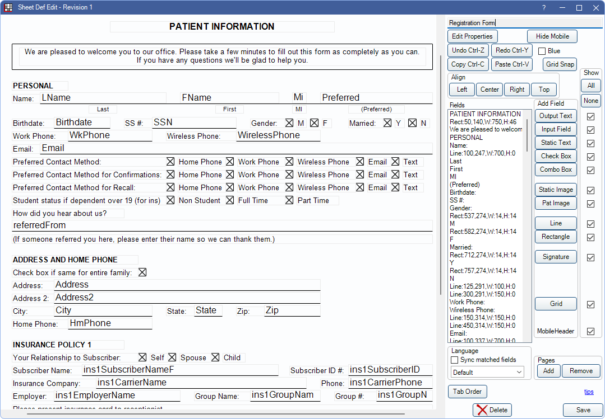
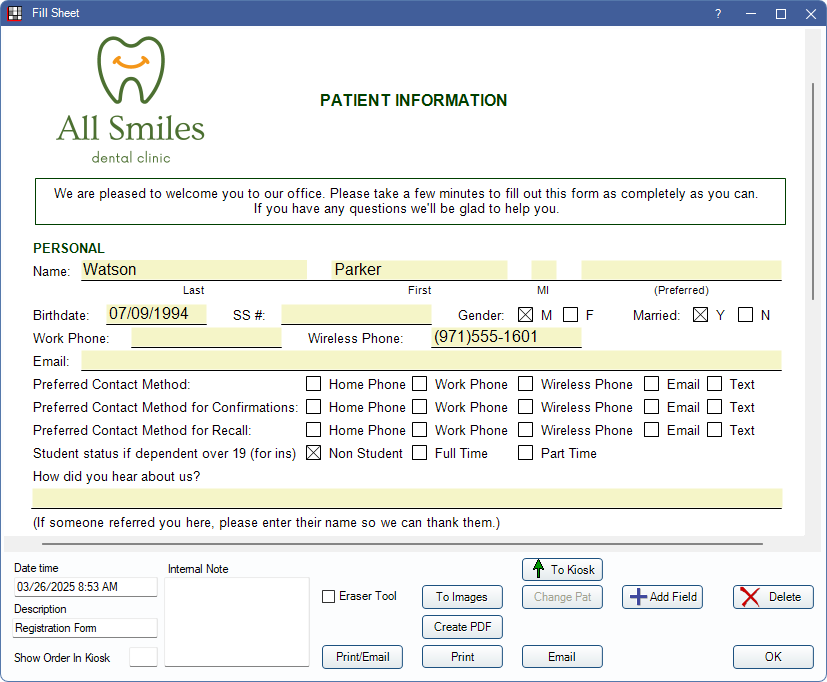

Sheets
Sheets are templates that can be customized for patient forms, letters, and more.
In the Main Menu, click Setup, Sheets.

 See our Sheets Playlist.
See our Sheets Playlist.
You can use default sheet layouts can be used as-is, customize existing layouts, or create new layouts from scratch. Depending on the sheet type, you can use multiple layouts (e.g., letters, forms, etc.) or a customized layout can be set as the default for printed documents (e.g., Rx, Treatment Plan, and Statement).
Sheet Types
Open Dental has numerous sheets types to use for both internal and patient-facing documents. Defaults layouts are included and can be customized.
- Consent Forms: Used to obtain patient signatures.
- Deposit Slips: Used to format the deposit slips used in the Manage Module
- ERAs: Use to customize ERAs.
- EraGridHeader: Shows above every claim paid on a customized ERA Sheet.
- Exam Sheets: Used in the Chart Module to track exam information.
- Lab Slips: Used to send to Laboratories for Lab Cases.
- Labels: Used to print custom labels on a label printer.
- Medical History Forms: Used to obtain patient medical history.
- Patient Forms: Used for miscellaneous forms such as registration forms, financial agreements, or HIPAA forms.
- Patient Letters: Used for miscellaneous letters such as excuse letters or post-op instructions.
- Payment Plans: Used in Payment Plans.
- Screening Forms: Used in Public Health Screening.
- Referral Letters: Used for referrals and can be used with Automation.
- Referral Slips: Used for referrals.
- Routing Slips: Used for printing routing slips.
- Rx Instructions: Used to provide prescription instructions for the patient.
- Rx: Used for printed Prescriptions.
- Statements: Used for Statements.
- Treatment Plans: Used for Treatment Plans.
- Chart Layouts: Used to customize the configuration of the Chart Module.
Customizing a Sheet
In Sheets, click New, or double-click a custom sheet to edit.
Sheets can include static text, images, information from the database, input fields, checkboxes, signature boxes, and more. This allows you to set up sheets that can be easily printed with specific information or that can be filled out as needed.
Filling Out a Sheet
In the Main Toolbar, click Forms. Double-click an existing form to edit.
Sheets can be filled out by using the eClipboard App, Web Forms Feature feature, a Kiosk, or by printing the form out. Forms for office use (e.g., Exam Sheets, Screenings, etc.) can also be filled out within Open Dental.
Once filled out, a sheet can be reviewed, printed, saved to the Imaging Module. For forms filled out electronically some information (e.g., contact information, allergies, etc.) can be directly imported into the patient's account.
Sheet Design Service
If you have existing documents you would like to convert to sheets, but don't have the time or expertise to set them up, we can help! See Fees for Support and Services for our rates.